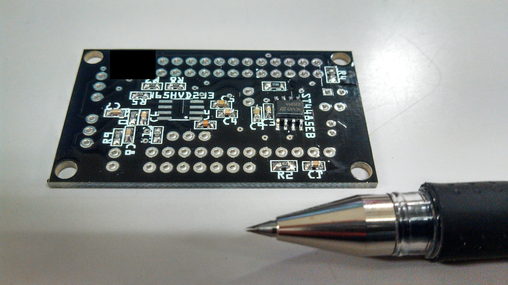

Duo RS-485 Shield
The RS-485 Shield takes the TX and RX signals from the DUO, and with an additional pin for flow control, interfaces with the DYNAMIXEL servo with two lines of data. The RS-485 protocol is a differential type of communication so it is better suited for communication through longer distances.
The shield requires little extra hardware, since the transceiver can be chosen for 3.3V microcontrollers. This version of the shield uses ST4485EB RS-485 transceiver. It can communicate up to 20Mbps, however, the DYNAMIXEL servos can communicate at a maximum baudrate of 1Mbps, so there should be no problem.
Here is a render done with ecad.io:

An additional complexity when using a RS-485 bus, is the addition of a termination resistor. This is a cumbersome topic and after several hours of research have not come up with the optimal solution. Most of the references I have found are anecdotical and sometimes a little contradictory. A good reference is the Guidelines for Proper Wiring of an RS-485 (TIA/EIA-485-A) Network published by Maxim Integrated. An additional problem is that I am not sure how the servos are connected internally so I cannot draw conclusions on the topology. For example, is the microcontoller a stub, or an end in the connection? In theory, stubs should not have terminator resistors. Also, twisted wires should be use to cancel noise, but ROBOTIS official cables are not twisted.

Before designing the PCB, I prototyped with a breakout of a RS-485 transceiver RS485 SP3485 Module Board SP3485/RS485 To TTL Transceiver Converter Evaluation Development Board Kit 3.3V. In my (limited) experience, if you are only using one servo it work better if the transmiter end (i.e., the microcontoller) has no termination resistor. For maximum flexibility I have added a jumper JP1 in the board to be able to add or remove a terminator resistor. As far as I know, this is the best way to handle the problem.
These are early prototypes using the RS485 SP3485 Module Board SP3485/RS485 To TTL Transceiver Converter Evaluation Development Board Kit 3.3V board as RS-485 Transceiver.
And...this is the final board. The PCB was manufactured using ELECROW's service and the components were soldered by myself. 
Disclaimer
This shield has not been fully tested and I am not responsible for any malfunction or damage to your equipment. Source code and schematics are provided as-is. I strongly suggest you to take a good look at them before testing the board.